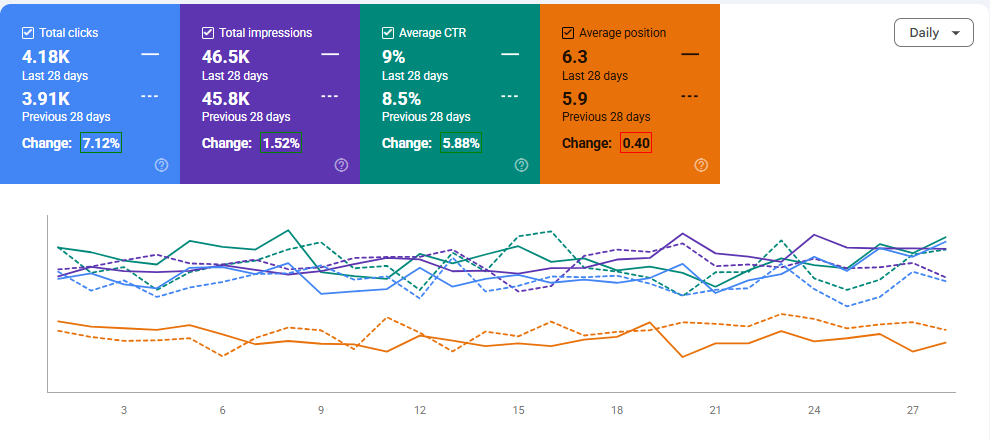
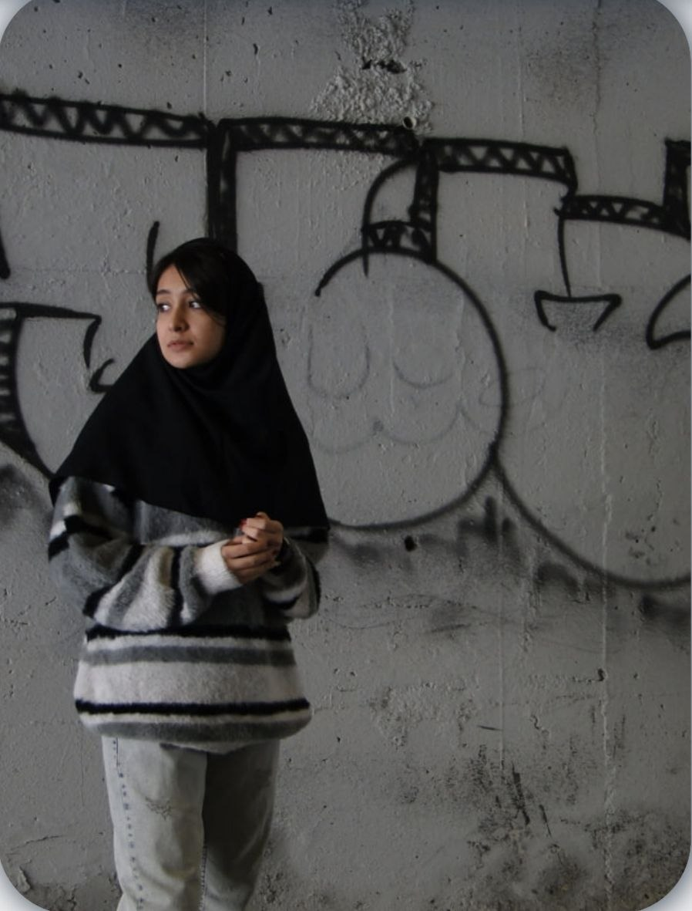
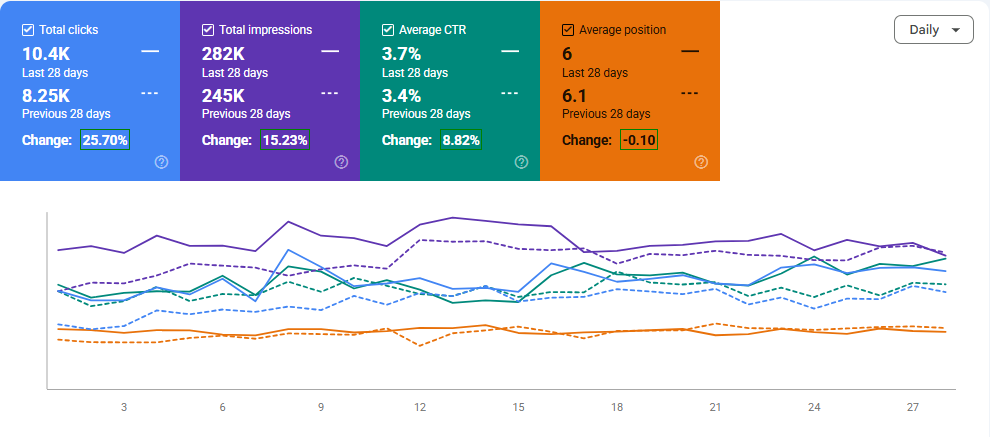
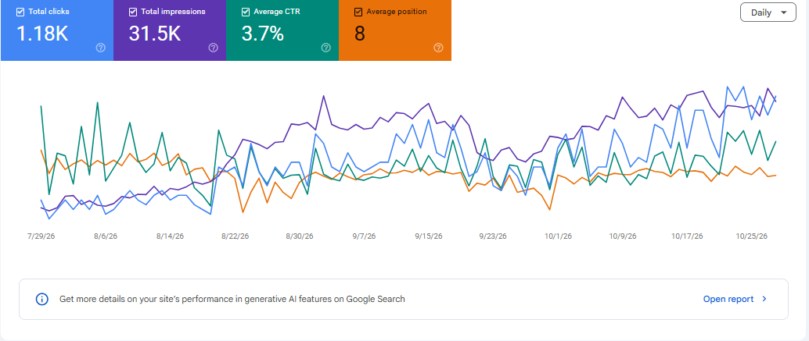
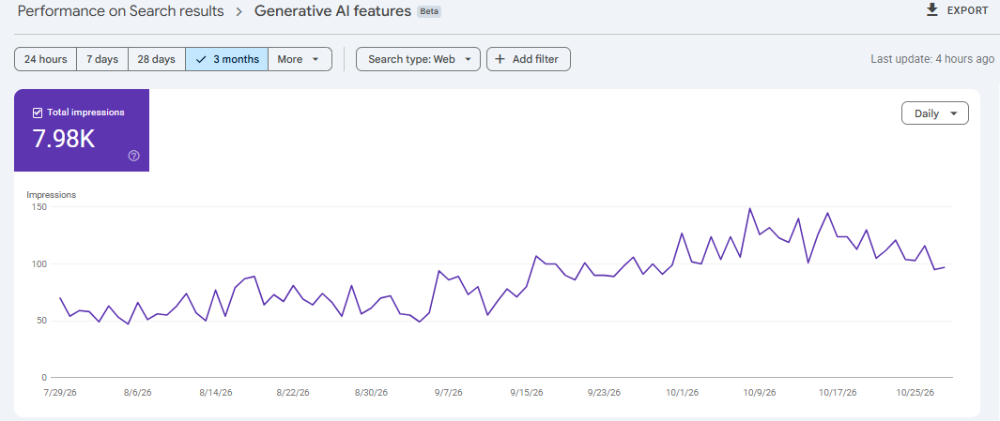
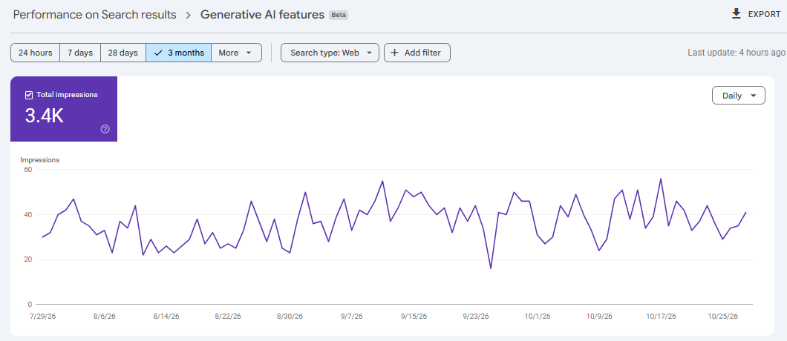

تحلیل عملکرد و رشد ارگانیک
بررسی دادههای سرچ کنسول، تغییرات کلیک و ایمپرشن و شناسایی فرصتهای بهبود.
کارشناس سئو | SEO Specialist
کارشناس سئو با تجربه کار روی پروژههای مختلف و اجرای فعالیتهای On-Page، Off-Page و Technical SEO. از تحلیل وضعیت سایت و تدوین استراتژی تا پیادهسازی تغییرات، رفع مشکلات فنی و بررسی نتایج، در مراحل مختلف سئو تجربه عملی دارم. تمرکزم روی تصمیمگیری بر اساس داده و پیدا کردن راهکارهای متناسب با شرایط هر پروژه است.

کارشناس سئو با تجربه کار روی پروژههای مختلف و اجرای فعالیتهای On-Page، Off-Page و Technical SEO. از تحلیل وضعیت سایت و تدوین استراتژی تا پیادهسازی تغییرات، رفع مشکلات فنی و بررسی نتایج، در مراحل مختلف سئو تجربه عملی دارم. تمرکزم روی تصمیمگیری بر اساس داده و پیدا کردن راهکارهای متناسب با شرایط هر پروژه است.

بررسی دادههای سرچ کنسول، تغییرات کلیک و ایمپرشن و شناسایی فرصتهای بهبود.

استخراج و خوشهبندی کلمات کلیدی، بررسی صفحات رقبا و تدوین پیشنهادهای محتوایی.

بهبود ساختار صفحات، هدینگها، لینکسازی داخلی و عناصر محتوایی متناسب با هدف جستوجو.

ثبت و تحلیل نمونههای نمایش نام برند و محتوای سایت در پاسخهای ابزارهای هوش مصنوعی.

بررسی منابع و صفحات مورد استفاده در پاسخها و شناسایی فرصتهای بهبود محتوا برای دیدهشدن بهتر.
برای همکاری، فرصت شغلی یا گفتوگوی تخصصی در ارتباط باشیم.